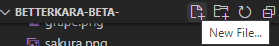
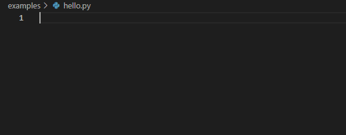
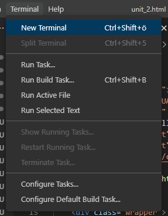
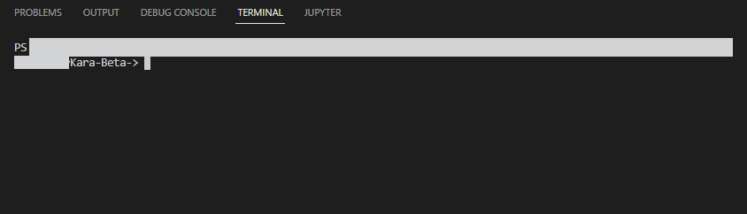

Lektion 2: Hello, World!
Bist du bereit, dein erstes Programm mit Python zu schreiben? Dann bist hier richtig.
1. Datensalat
Zuerst müssen wir einige Dateien einrichten. Erstelle dafür einen neuen Python-Ordner auf deinem Gerät. Dann kannst du einen Unterordner für Pythonkara erstellen.
2. VSCode
Öffne das neu installierte Programm VSCode. In dem Programm kannst du den Ordner für Pythonkara öffnen. Jetzt kannst du mit VSCode eine neue Datei mit dem Namen 'hello.py' erstellen.

Hier siehst du die neu erstellte leere Datei.

Zuerst wollen überprüfen, ob wir Python richtig eingerichtet haben. Dazu schreiben wir ein kleines Testprogramm. Dieses soll nur 'Hallo Welt' ausgeben. Das Programm sieht dann so aus:
print("Hallo, Welt!")
Jetzt wollen wir das Programm ausführen. Dafür öffnen wir in VSCode ein Terminal.

Hier sieht man ein leeres Terminal.

Um das Programm zu starten, öffnen wir es mit Python. Dazu musst du folgendes eingeben:
python hello.py
Wenn es eine Fehlermeldung gibt, hast du wahrscheinlich entweder den relativen Pfad zum Programm (hier 'hello.py') nicht korrekt angegeben oder die Installation von Python hat nicht funktioniert. Gehe dann noch einmal die Installation von Python Hier durch